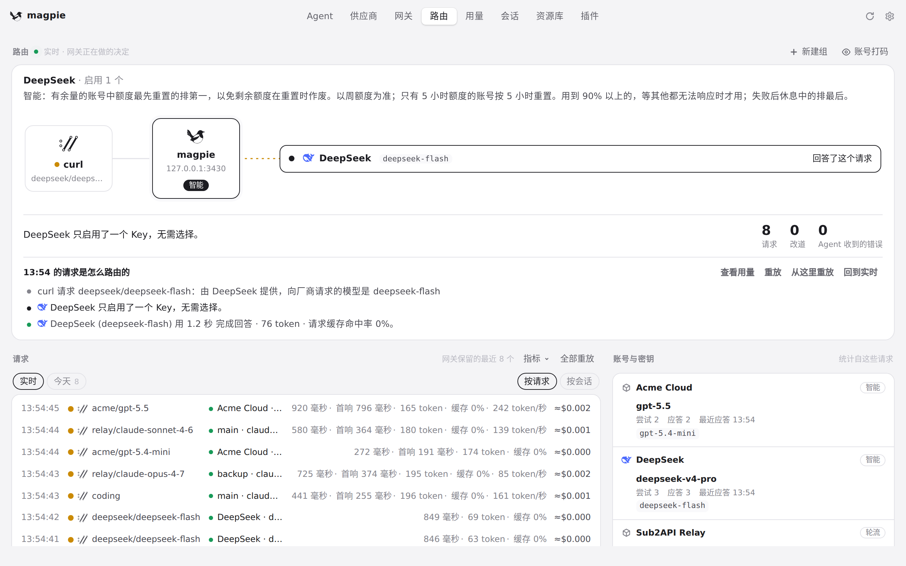
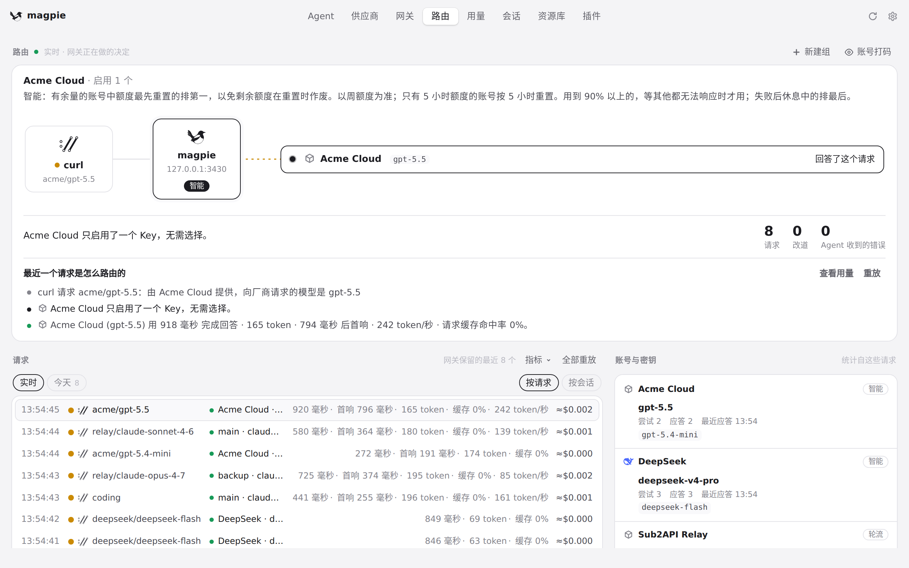

#1181 界面预览
commit 701e013 · 回到 PR · 「路由」页实时舞台下方新增了一块「当前额度」区：它读「用量」页的 /api/usage/quotas，把舞台上那些供应商的账号/Key 额度卡片（窗口、已用/剩余、重置时间、陈旧读数）单独列出来，跟随「已用 / 剩余」偏好，可见时最多一分钟读一次；选中历史请求、过去日期或重放时隐藏并停止轮询。
红线是鼠标走过的轨迹，红色圆环是一次点击；底部文字是这一步在做什么。空格暂停，← → 逐段查看。
路由实时舞台与其下的当前额度区 · 「路由」页顶部：实时舞台，紧邻其下的「当前额度」区

选中较早的请求 · 选中较早请求后，再看舞台及其下方的区域

选中较早的请求 · 回到最新请求后，舞台下方的区域